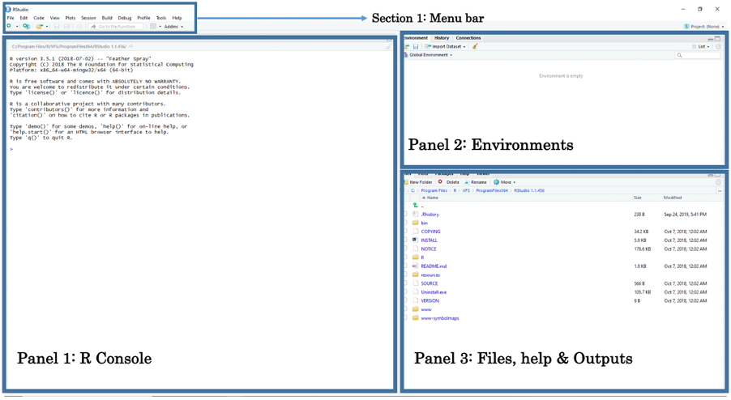
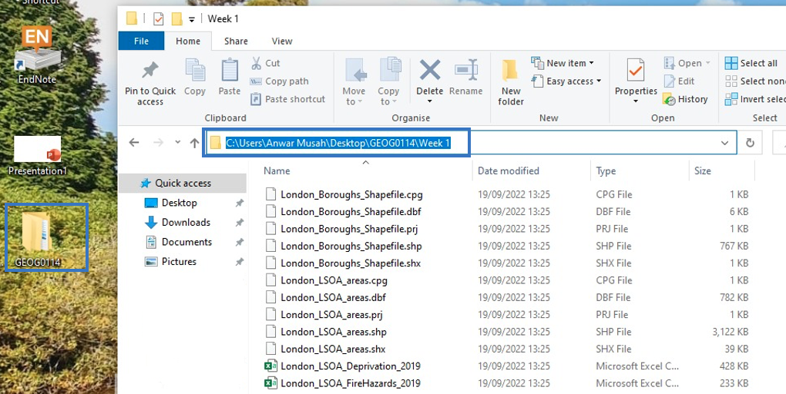

1 Spatial analysis for data sciences
1.1 Introduction
The goal for this week’s session is to get you started with using RStudio, and being familiar with its environment. The session aims to introduce you to the basic programming etiquette, as well as building confidence for using RStudio as a GIS tool. At the end of this session, you should be able to perform some basic data managing tasks as well as generate a simple choropleth map in RStudio.
1.1.1 Learning outcomes
The first task includes getting you started with RStudio by installing the needed software(s) (i.e., RStudio and R (Base)) on to your personal laptop, and becoming familiar with its environment and panels. We will begin a soft introduction on the basics of managing data in RStudio. This includes learning how to create various objects in RStudio such as vector and data frame objects. The crucial part of this session we be to know how to the set working directories as well as import your dataset in RStudio. Finally, we will learn how to perform the basic visualisation of spatial data in RStudio.
Let us begin.
1.2 Getting started with RStudio
What is RStudio (or R)?
R, or RStudio is a statistical software programming package that allows the user to carry out different types of statistical analysis. It can also be used as a GIS software to perform various kinds of spatial analysis as you will see throughout the course of GEOG0114. In the same vein, you can use it for data managing and geo-processing (i.e., importing different types of spatial formats for manipulation beforehand for spatial analysis). There are two versions:

The famous icon on the left is the version for R (Base), and the one on the right is the version for RStudio. Both software packages are the same. The only difference is that RStudio is attractive, intuitive, and more importantly, it is user-friendly than Base R. So, we will be using this version (i.e., RStudio) throughout the course.
Let us talk about downloading RStudio.
1.2.1 Download and install RStudio on to your laptop
RStudio is an open source software, and today its the go-to software for many researchers - its highly recommended for anyone in the domains of data science, scientific research, and technical communication. It is easy to access, and easy to download and install. In order for RStudio to work you must first install R (Base). You can follow the steps and use the table below to download the correct version for your operating system (i.e., Windows or MAC).
STEPS
Download the file (i.e.,
.exeor.pkg) for R (Base) in accordance with your operating system from the links provided in the table below. Next, install it by clicking on the downloaded file (i.e.,.exeor.pkg).Now, we can download the file (i.e.,
.exeor.dmg) for RStudio in accordance with your operating system from the links provided in the table below. You can install it by clicking on the downloaded file (i.e.,.exeor.dmg).
| OS User type | R (Base) | RStudio Desktop |
|---|---|---|
| Windows | R-4.2.1-win.exe | RStudio-2022.07.1-554.exe |
| MAC | R-4.2.1.pkg | RStudio-2022.07.1-554.dmg |
1.2.2 Becoming familiar with the panels in RStudio
You should by now have opened RStudio on your laptop. When opening RStudio for the first time, you are greeted with its interface. The window is split into three panels: 1.) R Console, 2.) Environments and 3.) Files, help & Output.

- Panel 1: The Console lets the user type in R-codes to perform quick commands and basic calculations.
- Panel 2: The Environments lets the user see which datasets, spatial objects and other files are currently stored in RStudio’s memory
- Panel 3: Under the File tab, it lets the user access other folders stored in the computer to open datasets. Under the Help tab, it also allows the user to view the help menu for codes and commands. Finally, under the Plots tab, the user can perusal his/her generated plots (e.g., histogram, scatterplot, maps etc.).
The above section is the Menu Bar. You can access other functions for saving, editing, and opening a new Script File for writing codes. Opening a new Script File will reveal a fourth panel above the Console.
You can open a Script File by:
Clicking on the File tab listed inside the Menu Bar. A scroll down bar will reveal itself. Here, you can scroll to the section that says New File.
Under New File, click on R Script. This should open a new Script File titled “Untitled 1”.
Important Notes: Throughout the course, and in all practical tutorials, you will be encouraged to use an R Script for collating and saving the codes you have written for carrying out spatial analysis. However, we will start writing codes in a script later when we reach to section 1.3 of this tutorial. For now, let us start with the absolute basics, which is interacting with the R Console and using it as a basic calculator for typing simple code.
1.2.3 Using R Console as a Calculator
The R console window (i.e., Panel 1) is the place where RStudio is waiting for you to tell it what to do. It will show the code you have commanded RStudio to execute, and it will also show the results from that command. You can type the commands directly into the window for execution as well.
Let us start by using the console window as a basic calculator for typing in addition (+), subtraction (-), multiplication (*), division (/), exponents (^) and performing other complex sums.
Click inside the R Console window and type 19+8, and press enter key button ↵ to get your answer. Quickly perform the following maths by typing them inside the R Console window:
# Perform addition
19+8
# Perform subtraction
20-89
# Perform multiplication
18*20
# Perform division
27/3
# To number to a power e.g., 2 raise to the power of 8
2^8
# Perform complex sums
(5*(170-3.405)/91)+1002Aside from basic arithmetic operations, we can use some basic mathematical functions such as the exponential and logarithms:
exp()is the exponential functionlog()is the logarithmic function
Do not worry at all about these functions as you will use them later in the weeks to come for transforming variables. Perform the following by typing them inside the R Console window:
# use exp() to apply an exponential to a value
exp(5)
# use log() to transforrm a value on to a logarithm scale
log(3)1.2.4 Creating basic objects and assigning values to it
Now that we are familiar with using the console as a calculator. Let us build from this and learn one of the most important codes in RStudio which is called the Assignment Operator.
This arrow symbol <- is called the Assignment Operator. It is typed by pressing the less than symbol key < followed by the hyphen symbol key -. It allows the user to assign values to an Object in R.
Objects are defined as stored quantities in RStudio’s environment. These objects can be assigned anything from numeric values to character string values. For instance, say we want to create a numeric object called x and assign it with a value of 3. We do this by typing x <- 3. When you enter the object x in the console and press enter ↵, it will return the numeric value 3.
Another example, suppose we want to create a string object called y and assign it with some text "Hello!". We do this typing y <- "Hello!". When you enter y in console, it will return the text value Hello.
Let us create the objects a,b, c, and d and assign them with numeric values. Perform the following by typing them inside the R Console window:
# Create an object called 'a' and assign the value 17 to it
a <- 17
# Type the object 'a' in console as a command to return value 17
a
# Create an object called 'b' and assign the value 10 to it
b <- 10
# Type the object 'b' in console as a command to return value 10
b
# Create an object called 'c' and assign the value 9 to it
c <- 9
# Type the object 'c' in console as a command to return value 9
c
# Create an object called 'd' and assign the value 8 to it
d <- 8
# Type the object 'd' in console as a command to return value 8
dNotice how the objects a, b, c and d and its value are stored in RStudio’s environment panel. We can perform the following arithmetic operations with these object values:
# type the following and return an answer
(a + b + c + d)/5
# type the following and return an answer
(5*(a-c)/d)^2Let us create more objects but this time we will assign character string(s) to them. Please note that when typing a string of characters as data you will need to cover them with quotation marks "...". For example, say we want to create a string object called y and assign it with some text "Hello!". We do this by typing y <- "Hello!".
Try these examples of assigning the following character text to an object:
# Create an object called 'e' and assign the character string "RStudio"
e <- "RStudio"
# Type the object 'e' in the console as a command to return "RStudio"
e
# Create an object called 'f', assign character string "Hello world"
f <- "Hello world"
# Type the object 'f' in the console as a command to return "Hello world"
f
# Create an object called 'g' and assign "Blade Runner is amazing"
g <- "Blade Runner is amazing"
# Type the object 'g' in the console to return the result
gWe are now familiar with using the console and assigning values (i.e., numeric and string values) to objects. The parts covered here are the initial steps and building blocks for coding and creating datasets in RStudio.
Let us progress to section 1.3. Here is where the serious stuff start. We will learn the basics of managing data and some coding etiquette - this includes creating data frames, importing & exporting spreadsheets, setting up work directories, column manipulations and merging two data frames. Learning these basic tasks are key for managing data in RStudio.
Point of no return: From here on out - let us open a script file and type codes there instead of the Console. We are getting serious now, we will never use the Console again.
1.3 Basics of managing data in RStudio
1.3.1 How do we enter data into RStudio?
As you have already seen, RStudio is an object-oriented software package and so entering data is slightly different for the usual way of inputting information into a spreadsheet (e.g., Microsoft Excel). Here, you will need to enter the information as a Vector object before combining them into a Data Frame object.
Consider this crude example of data containing the additional health information for 4 people. It contains the variable (or column) names ‘id’, ‘name’, ‘height’, ‘weight’ and ‘gender’
| id | name | height | weight | gender |
|---|---|---|---|---|
| 1 | Kofi | 1.65 | 64.2 | M |
| 2 | Harry | 1.77 | 80.3 | M |
| 3 | Huijun | 1.70 | 58.7 | F |
| 4 | Fatima | 1.68 | 75.0 | F |
Now, when entering data to RStudio it is not like Microsoft Excel where we enter data into the cells of a spreadsheet. In RStudio, data is entered as a sequence of elements and listed inside an object called a vector. For instance, if we have three age values of 12, 57 and 26 years, and we want to enter this in RStudio, we need to use the combine function c() and combine these three elements into a vector object. Hence, the code will be c(12, 57, 26). We can assign this data by typing this code as age <- c(12, 57, 26). Any time you type ‘age’ into RStudio console it will hence return these three values unless you chose to overwrite it with different information.
Let us look at this more closely with the 'id' variable in the above data. Each person has an ID number from 1 to 4. We are going to list the numbers 1, 2, 3 and 4 as a sequence of elements into a vector using the combine function c() and then assign it to as a vector object calling it 'id'.
# Create 'id' vector object
id <- c(1, 2, 3, 4)
# Type the vector object 'id' in console to see output
idNow, let us enter the information the same way for the remaining columns for ‘name’, ‘height’, ‘weight’ and ‘gender’ like we did for ‘id’:
# Create 'name' vector object
name <- c("Kofi", "Harry", "Huijun", "Fatima")
# Create 'height' (in meters) vector object
height <- c(1.65, 1.77, 1.70, 1.68)
# Create 'weight' (in kg) vector object
weight <- c(64.2, 80.3, 58.7, 75.0)
# Create 'gender' vector object
gender <- c("M", "M", "F", "F")Now, that we have the vector objects ready. Let us bring them together to create a proper dataset. This new object is called a Data frame. We need to list the vectors inside the data.frame() function.
# Create a dataset (data frame)
dataset <- data.frame(id, name, height, weight, gender)
# Type the data frame object 'dataset' in console to see output
dataset
# You can also see dataset in a data viewer, type View() to data:
View(dataset)Important Notes: The column ‘id’ is a numeric variable with integers. The second column ‘name’ is a text variable with strings. The third & fourth columns ‘height’ and ‘weight’ are examples of numeric variables with real numbers with continuous measures. The variable ‘gender’ is a text variable with strings – however, this type of variable is classed as a categorical variable as individuals were categorised as either ‘M’ and ‘F’.
1.3.2 How do we create a variable based on other existing variables in our data frame?
To access a variable by its name within a data frame, you will need to first type the name of the data frame followed by a $ (dollar sign), and then typing the variable’s name of interest. For instance, suppose you just want to see the height values in the Console viewer - you just type:
# to access height - you need to type 'dataset$height'
dataset$heightWe can use other columns or variables within our data frame to create another variable. This technique is essentially important when cleaning and managing data. From this dataset, it is possible to derive the body mass index bmi from height and weight using the formula:
To generate bmi into our data frame, we would need to access the height (m) and weight (kg) columns using the $ from the data frame its stored to, and apply the above formula as a code to generate the new bmi column:
# Create 'bmi' in the data frame i.e.,'dataset' and calculate 'bmi'
# using the $weight and $height
dataset$bmi <- dataset$weight/((dataset$height)^2)
# View the data frame ‘dataset’ and you will see the new bmi variable inside
View(dataset)You can overwrite the height (m) column to change its units into centimeters by multiplying it to 100; equally, the weight (kg) column can be overwritten and converted from units of kilograms to grams by multiplying it to 1000.
# using $height and *100
dataset$height <- dataset$height*100
# using $weight and *100
dataset$weight <- dataset$weight*1000
# use View() the data frame ‘dataset’ and you will see the updated variables
View(dataset)1.3.3 How do we set the working directory in our computer by connecting our folder to RStudio with the setwd() function?
Now, we are getting very serious here!
Important action: Before we do anything - make sure to have downloaded the data set for week 1 if you haven’t done so by clicking here. In your computer, create a new folder on your desktop page and rename the folder to “GEOG0114”, and create another folder within “GEOG0114” and rename it as “Week 1”. Make sure to unzip and transfer ALL the downloaded data directly to the Week 1 folder.
Now, this part of the practicals are probably the most important section of this tutorial. It’s usually the “make” or “break” phase (i.e., you ending up loving RStudio OR you hating it and not ever wanting to pick up R again).
We are going to learn how to set-up a working directory. This basically refers to us connecting the RStudio to the folder containing our dataset. It allows the user to tell RStudio to open data from a folder once it knows the path location. The path location specifies the whereabouts of the data file(s) stored within a computer. Setting your directory in RStudio beforehand makes life incredibly easier in terms of finding, importing, exporting and saving data in and out of RStudio.
To illustrate what a path location is – suppose on my desktop (mac/widows) there is a folder called “GEOG0114”, and within that folder, exists another folder called “Week 1”. Finally, suppose a comma separated value (.csv) data file called “London_LSOA_FireHazards.csv” is store in this last folder i.e., Week 1. If via RStudio you want to open this CSV data file located in within the “Week 1” folder. You will need to first set the path to “Week 1” in RStudio using the setwd() function.
Therefore, the path location to this folder on a Windows machine would be written as follows, "C:/Users/accountName/Desktop/GEOG0114/Week 1". You can access this piece of information simply by:
- Open the GEOG0114 folder to reveal the Week 1 folder.
- Open the Week 1 folder in the data files are stored.
- Now, click on the bar at the top which shows
GEOG0114 > Week 1. This should highlight and show"C:\Users\accountName\Desktop\GEOG0114\Week 1"(see image below):

- Now, copy
"C:\Users\accountName\Desktop\GEOG0114\Week 1"and paste the path name into thesetwd()function in your R script. - Lastly, change all the back slashes
\in the path name to forward slashes/and run the code. It should look like this:setwd("C:/Users/accountName/Desktop/GEOG0114/Week 1").
For Windows, the setwd() is as follows:
# set work directory in windows
setwd("C:/Users/accountName/Desktop/GEOG0114/Week 1")For MAC users, its marginally different. The path location would be written as follows, "/Users/accountName/Desktop/GEOG0114/Week 1". You can access this piece of information simply by:
- Right-clicking on the folder “Week 1” (not file) in which the files are stored.
- Hold the “Option”
⌥key down

- Click
Copy "filename" as Pathname - Paste the copied path name into the function
setwd()and run the code
For Mac, the setwd() is as follows:
# set work directory in macs
setwd("/Users/accountName/Desktop/GEOG0114/Week 1")This should set the working directory. Now, let us learn how to import a CSV data into RStudio.
1.3.4 How do we import, merge and export CSV data with RStudio?
1.3.4.1 Importing data using read.csv()
As you will be working mostly with comma separated value formatted data (i.e., csv) we will therefore learn how to import and export in RStudio. There are two files that we are going to import into RStudio from Week 1’s folder:
London_LSOA_Deprivation_2019.csvwhich contains information on seven indicators (as scores) and an IMD ranking for socioeconomic deprivation for 4,836 postcodes across London in 2019.London_LSOA_FireHazards_2019.csvwhich contains details about the observed and estimated expected number of fire-related accidents to have occurred in residential premises with the overall number of houses in 4,836 postcodes across London in 2019.
To import a csv into RStudio, we use the read.csv() function. To demonstrate this, let us import the data for fires into an data frame object and name it as Fire_data
# Import data using read.csv() function
Fire_data <- read.csv(file="London_LSOA_FireHazards_2019.csv", header = TRUE, sep = ",")Just in case…suppose if we did NOT set the working directory earlier. We would have to go through the hassle of typing the path location in the read.csv().
For windows:
Fire_data <- read.csv(file="C:/Users/accountName/Desktop/GEOG0114/Week 1/London_LSOA_FireHazards_2019.csv", header = TRUE, sep = ",")For Mac:
Fire_data <- read.csv(file="/Users/accountName/Desktop/GEOG0114/Week 1/London_LSOA_FireHazards_2019.csv", header = TRUE, sep = ",")I do not recommend doing it this way. Just set the work directory with setwd() to make life easier for yourself.
Important Notes: The arguments used in read.csv() function – 1.) ‘file =’ is a mandatory option where you quote the name of the file to be imported; 2.) ‘header = TRUE’ option is set to TRUE which is telling RStudio that the file that is about to be imported has column names on the first row so it should not treat as observations; and 3.) ‘sep = ","’ we are telling RStudio that the format of the dataset is comma separated.
We have imported the fire hazards data. Now, let us import the second data for deprivation using the read.csv() function and call it Deprivation_data. The code would look something as follows:
# Import data using read.csv() function
Deprivation_data <- read.csv(file="London_LSOA_Deprivation_2019.csv", header = TRUE, sep = ",")
# Show viewer the data sets
View(Deprivation_data)
View(Fire_data)1.3.4.2 Joining two datasets by merger using the merge() function
You will often find yourself merging two or more data frames together, especially bringing together a spatial object with a non-spatial object. We cannot stress the importance of merging objects in the correct order so that the spatial attributes are preserved.
In this instance, we are just dealing with two ordinary dataset which are non-spatial - i.e., one data set contains information on Fires that occurred in geographic units in London know as Lower Super Output Areas (LSOA), while the other contains its corresponding information for socioeconomic indicators that describe the LSOA. Hence, it is possible to merge the two data frames uniquely using a common key variable like LSOA_code.

This task can be done using the merge function merge(). Consequently, we want the format of the merge code to look something akin to this syntax merge(target_object, selected_object, by=”LSOA”).
Merging data frames is indeed a very important technique to know especially if you need to bring together event information with no spatial dimension with actual spatial data. Alright, let’s merge the deprivation data on the fire records using the LSOA_code column, and generate a bigger data frame that contains both the fire and socioeconomic information:
# Using the merge() function
Full_data <- merge(Fire_data, Deprivation_data, by.x = “LSOA_code”, by.y = “LSOA_code”, all.x = TRUE)
# View the datasets
View(Full_data)Important Notes: The arguments used in merge.csv():
Fire_datais the target data frame we want something to be merged on to.Deprivation_datais the selected data frame we are using to merge with theFire_data.by.x = “LSOA_code”option we are specifying the name of the join column from the target data frame i.e.,Fire_data.by.y = “LSOA_code”option we are specifying the name of the join column from the selected data frame i.e.,Deprivation_dataall.x=TRUEoption we are telling RStudio to retain all rows that are originally from the target data after merging regardless of whether or not they are present in the selected data frame. So even if a row from the selected data does not find a unique link with any of the rows in target data to match too - it will still preserve the target data frame by not discarding unlinked rows. But it will discard the unmatched rows from the selected data frame.
1.3.4.3 Saving your dataset using the write.csv() function
Let us save a version of this as a .csv file as a saved product named “London_Fire_and_Deprivation_2019.csv”. This can be done by using the write.csv() function. It will export the data frame object into a .csv format.
# Export ‘Full_data’ object as .csv into 'Week 1' folder
write.csv(Full_data, file = "London_Fire_and_Deprivation_2019.csv", row.names = FALSE)Important Notes: The arguments used in merge.csv():
Full_datais an object we are exporting. It is compulsory to specify the object data frame we want to exportfile =is a mandatory argument. We must give a name to the file we wish to export it as with.csvextension.row.names =this is an annoying argument! It will automatically index the dataset with unique row numbers by default if we do not specifyFALSE! Since the data has its own unique identifiers (i.e., LSOA_code) we specify ‘FALSE’ to not perform this action of indexing
Again, suppose if you did NOT set the work directory to your folder, you will have to type the whole path location to where you want the data to be exported which could be a hassle:
For Windows:
write.csv(Full_data, file = "C:/Users/accountName/Desktop/GEOG0114/Week 1/London_Fire_and_Deprivation_2019.csv", row.names = FALSE)For Mac:
write.csv(Full_data, file = "/Users/accountName/Desktop/GEOG0114/Week 1/London_Fire_and_Deprivation_2019.csv", row.names = FALSE)Again, I do not recommend doing it this way. Just set the work directory with setwd() to make life easier for yourself and to avoid R calling you out for errors.
Now that we have learned a lot of the basic things in RStudio – the stuff shown in section 1.3 will be used quite a lot in future tutorials. Let us progress to the section 1.4 where will start using RStudio as a GIS software. Here, we will create our first map to display the spatial distribution of socioeconomic deprivation using the Full_data data frame object.
1.4 Basic visualisation of spatial data in RStudio
1.4.1 Installing packages into RStudio
So far, we have been using functions and commands that are by default built-in RStudio. As you will become more and more proficient in RStudio, you will come to realise that there are several functions in RStudio that are in fact not built-in by default which will require external installation.
For instance, the “sf” package which is called “Simply Features” allows the user to load shapefiles (a type of Vector spatial data) into RStudio’s memory. Another important package is called “tmap”, this package gives access to various functions that allows the user to write code and emulate RStudio as a GIS software. These are examples of packages with enables mapping of spatial data. They need to be installed as they not built-in programs in RStudio.
For basic mapping, We will need to install following packages: devtools, stars, tmap and sf using the install.packages() and install_version() functions, and then activate the packages to make them active using the library() function.
First install devtools and stars:
install.packages("devtools")
devtools::install_version("stars", version = "0.5.3", repos = "http://cran.us.r-project.org")You will be prompted to choose an update for the stars package. Type 1 for “All” and press the enter button ↵ to continue the installation for stars. Once the binaries for devtools and stars are done, install the tmap and sf packages.
install.packages("sf")
install.packages("tmap")Once the installation is complete, you MUST activate the packages using the library() function. Type the following to perform this action:
# Active the “sf” and “tmap” packages
library("sf")
library("tmap")1.4.2 Adding shapefiles in RStudio
The sf package grants the user access to a function called read_sf() to read-in shapefiles into RStudio. A shapefile typically contains the geometry of the spatial features e.g., points, line segment and boundaries of an areal feature etc. The shapefile has the extension of .shp (and are always accompanied by its other supporting files with extensions .shx, .prj, .dbf and .cpg).
We have two types of shapefiles:
London_LSOA_Areas.shpwhich contains the spatial boundaries of all LSOA postcodes in London.London_Borough_Shapefile.shpwhich contains the spatial boundaries for all 33 Boroughs in London.
We can easily load them in RStudio as Spatial Polygon objects, type into your script:
# Add shapefiles for LSOA and Boroughs
london_lsoa_shapefile <- read_sf("London_LSOA_areas.shp"
london_borough_shapefile <- read_sf("London_Boroughs_Shapefile.shp")We interested in visualising the data at an LSOA-level. We would need to merge the non-spatial (aka ordinary) data i.e., Full_data, uniquely in to the Spatial Polygon object we loaded in previously i.e., london_lsoa_shapefile, using the LSOA_code column.
Again, we can use the merge() function to perform this task the same way we carried out the joining of the two ordinary data frames in section 1.3.4.2. Consequently, we want the format of the merge code to look something akin to this syntax merge(target_spatial_object, selected_non_spatial_object, by=”LSOA”).
# Using the merge() function
Spatial_data <- merge(London_lsoa_shapefile, Full_data, by.x = “LSOA_code”, by.y = “LSOA_code”, all.x = TRUE)
# View the datasets
View(Spatial_data)1.4.3 Mapping with ‘tmap’ functions in RStudio
The tmap is the best package for creating maps in RStudio – it’s easy to code and user friendly. Let’s finally start some mapping! Here are some basic ‘tmap’ functions to be very familiar with:
tmap functions |
What it does… |
|---|---|
tm_shape() |
This allows the user to add layers to the map |
tm_polygon() |
This allows the user to direct customisations the added layer specified in tm_shape(). Note: This follows immediately after tm_shape() |
tm_fill() |
Here, we specify the variable of interest we want to map in the boundaries specified in tm_shape() |
tm_layout() |
This allows the user to make heavy customisations to the main title, legends and other cosmetics to text sizes etc. |
tm_compass() |
This allows the user to add a compass visual to the map output |
tm_scale_bar() |
This allows the user to add a scale bar to the map output |
1.4.3.1 Visualising the outline(s) of study area
Suppose you want to visual just the outline of London’s LSOA only:
# Visual outline of London’s LSOA postcodes only
tm_shape(Spatial_data) + tm_polygons()
# Insert the “Spatial_data” object into the command line of
# tm_shape(). No customisation has been applied here.
You can customise the level of transparency for both the area and borders by adding some arguments in the tm_polygon() [i.e., alpha, and border.alpha which only take values between 0 (full transparency) to 1 (100% solid)]. For example:
# Controlling transparencies for borders and areas
tm_shape(Spatial_data) + tm_polygons(alpha = 0.1, border.alpha = 0.4)
# Insert the “Spatial_data” object into the command line of
# tm_shape(), and in tm_polygon(), make the background (alpha) 10% solid
# and 40% for the borders (border.alpha)
1.4.3.2 Adding another layer on top of study area
Suppose you want to add another layer to show the regions (i.e., Borough) of London for which the LSOA areas reside in, you can use another tm_shape() in the code, the coding would be as follows:
# Adding another layer
tm_shape(Spatial_data) +
tm_polygons(alpha = 0.1, border.alpha = 0.4) +
tm_shape(London_borough_shapefile) +
tm_polygons(alpha = 0, border.alpha = 1, border.col = "black")
# The background of the added layer has been rendered to full
# transparency with alpha set to 0 and borders are fully solid with
# border.alpha set to 1 and border.col (colour) set to “black” to appear
# pronounced.
1.4.3.3 Full visualising of data in the maps
Suppose you want to visual the spatial data in those postcodes, we can use the tm_fill() function. Let us visual the IMD_Decile column which has DISCRETE (or CATEGORICAL) values classed from 1 to 10 to signify areas that are deprived (with 1 being the poorest) and those that are wealthier (with 10 being the least deprived).
The coding would be as follows:
# Generate map IMD_Deciles
tm_shape(Spatial_data) +
tm_fill("IMD_Decile", style = "cat", title = "Deprivation (Deciles)",
palette = "RdYlGn") +
tm_shape(london_borough_shapefile) +
tm_polygons(alpha = 0, border.alpha = 1, border.col = "black") +
tm_scale_bar(position = c("left", "bottom")) +
tm_compass(type = "arrow", position = c("right", "top")) +
tm_layout(legend.outside = TRUE, legend.title.size = 0.8,
legend.text.size = 0.7,
legend.title.fontface = 2)In the tm_fill(), we insert the variable of interest we want to visual. The style argument tells RStudio how to break the values into intervals for the legend and colour scheme (there are many e.g., “fixed”, “cont”, “pretty” and “cat” etc.,). We used the “cat” in the style argument because the IMD_Decile variable is categorical.
The title argument applies it to the legend only (not the plot itself!). The palette argument controls the colour scheme of the legend. In this example, we used a spectral type of colour i.e., “RdYlGn” that starts from Red (to show intense poverty) to Yellow (to signify normal) and to Green (to show intense levels of being rich).
Geography 101 – when creating a map, it is always best to add the North compass and scale bar. This is done with the tm_compass() and tm_scale_bar() functions. The tm_layout() allows you to make further customisations to the map such as placing the legends outside the plot region and modifying the text size etc. You can experiment with them by checking the help menu – just type: ?tm_layout() in the console.

This concludes this computer lab session. Challenge yourself with the task placed in section 1.6
1.5 References
1.5.1 Recommended reading (see reading list)
- Book: [Theory] Longley, P. et al (2015) Geographic Information Science & Systems (4th Edition); Chapters 2: The Nature of Geographic Data Click link (Note: use of your UCL login via institutional organisation (UK Federation) is required to access the digital book)
- Book: [Theory] Longley, P. et al (2015) Geographic Information Science & Systems (4th Edition); Chapters 3: Representing Geography Click link (Note: use of your UCL login via institutional organisation (UK Federation) is required to access the digital book)
- Book: [R Programming] Brunsdon, C. et al (2018) An Introduction to R for Spatial Analysis and Mapping; Chapter 3: Basics of Handling Spatial Data in R Click link (Note: Books can be borrowed from UCL’s Library)
- Book: [R Programming] Dorman, M. (2014) Learning R for Geospatial Analysis; Chapter 1: The R Environment Click link (Note: Digital book)
- Book: [R Programming] Dorman, M. (2014) Learning R for Geospatial Analysis; Chapter 3: Working with tables Click link (Note: Digital book)
- Paper: [R Programming] Tennekes, M. (2018). tmap: Thematic Maps in R. Journal of Statistical Software, 84(6), 1–39. https://doi.org/10.18637/jss.v084.i06 (Download)
1.6 Data Sources
- UK Fire statistics incident level dataset (see: “Low-level geography dataset”)[Source: UK Gov] Click Here
- English indices for Multiple Deprivation (IMD) for 2019 [Source: UK Gov] Click Here
- UK Shape files for different geographic units [Source: Office for National Statistics, Open Geography Portal] Click Here
1.7 Practical homework
Exploring the burden of fire hazards and vulnerability in London
An incidence rate (IR) is typically a measure of frequency used to quantify the occurrence of an event.
This basic quantitative measure is often applied in social sciences (e.g., criminology for crime rates, in education on pass rates for grades), epidemiology and disaster sciences as well. The study of fire hazards and safety is an intersection of these three fields.
Objectives: Use the spatial data you have built throughout the exercise to visual the distribution of incidence of fires that occurred in residential premises across postcodes in London in 2019.
CLUE: The incidence rate (I) formula for calculating fires hazards across LSOAs in London is the reported number of residential premises in an LSOA that experienced a fire event (E) divided by the total number of residential premises in an LOSA (T). This is shown below expressed per 1,000 residence (per capita).
The formula is:
Experiment the tmap functions and arguments